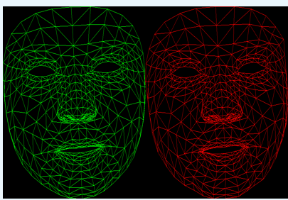
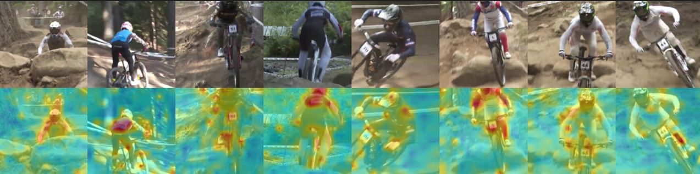

Hi, I'm Poorvita Mahabaleshwar
Working at the intersection of computer vision, audio, and multimodal AI research. I design and deploy real-world media AI pipelines that turn complex audio-visual data into reliable, scalable systems.
View My ProjectsMy Projects
3D Gaussian Splatting Reimplementation & Experimentation
Reimplemented and experimented with 3D Gaussian Splatting in Google Colab, exploring novel techniques for real-time 3D scene representation and rendering, crucial for AR/VR applications.
AI Segmentation Arena: YOLOv8, SAM & LLM Integration
An interactive application comparing YOLOv8 and SAM for image segmentation, enhanced with Google Gemini for intelligent explanation and evaluation of results, showcasing advanced computer vision and multimodal AI.

Audio-Driven Face Animation (Thesis Research)
Developed a novel pipeline using a Wave2Vec-inspired neural network to synthesize 3D facial mesh animations from speech audio, optimized for real-time media generation using PyTorch and generative AI techniques.

Action Recognition using TimeSformer
Achieved 95% accuracy by fine-tuning TimeSformer, a transformer-based video model, on the HMDB dataset, demonstrating spatio-temporal deep learning for motion understanding in complex video sequences.
Financial Copilot – AI-driven Financial Assistant
Built a modular financial analysis tool integrating LLMs, RAG, and real-time data via custom MCP protocol. Engineered LLM pipelines with LangChain, FAISS, and financial APIs in a collaborative 3-member team using Google Colab.
Audio_TD – Transcription with Diarization and Confidence Scoring
This project delivers a production-ready audio processing pipeline that converts raw recordings into accurate, speaker-aware transcripts. It integrates WhisperX for speech transcription with pyannote.audio for speaker diarization, enhanced by denoising, resampling, and word-level confidence scoring for improved reliability. The system is fully Dockerized and GPU-accelerated with CUDA, enabling fast and reproducible inference for real-world media workflows.
My Skills
Languages
Frameworks & Libraries
Tools
Technical Focus
Soft Skills
Get in Touch
I'm always open to discussing new projects, collaborations, or opportunities in computer vision, media, and 3D. Feel free to reach out!